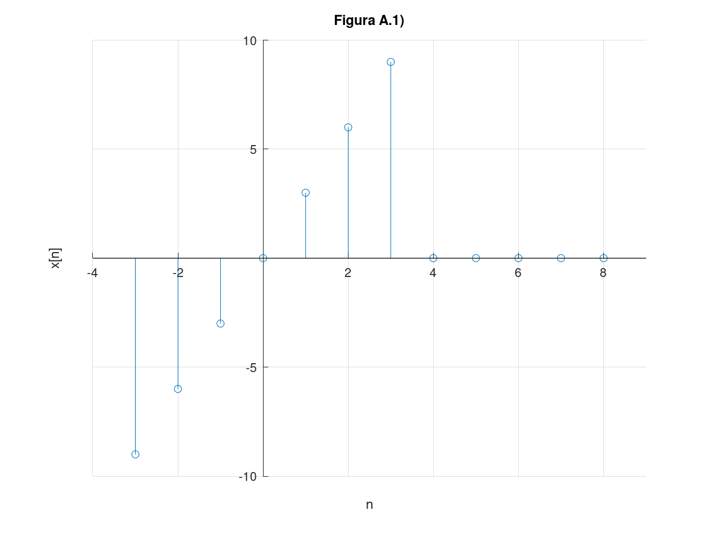

Integrantes:
La solución del problema 1 usando Python puede ser consultada desde el siguiente enlace.
imgpy1=imread('html/py1.png');
imshow(imgpy1)

imgpy2=imread('html/py2.png');
imshow(imgpy2)

3.11-2 Consider the discrete-time function $$f[n] = e-n/5 cos(\pi*n/5)u[n]$$
Section 3.11 uses anonymous functions in describing DT signals.
f = @(n) exp(-n/5).*cos(pi*n/5).*(n>=0);
While this anonymous function operates correctly for a downsampling operation such as f[2n], it does not operate correctly for an upsampling operation, such as f[n/2]. Modify the anonymous function f so that it also correctly accommodates upsampling operations. Test your code by computing and plotting f(n/2) over (?10 ? n ? 10).
Procedimiento
Creamos la función y vector de n
f = @(n) exp(-n/5).*cos(pi*n/5).*(n>=0); n=-10:1:10;
Modificamos la función
f1 = @(n) exp(-n/5).*cos(pi*n/5).*(n>=0).*(1./(mod(n,1)==0)); stem(n,f1(n)); title('Gráfica de la señal f[n]=e^{(-n/5)}*cos(pi*n/5)u[n]'); xlabel('n'); ylabel('f[n]'); axis([-11 11 -0.5 1.2]); grid on; set (gca, "xaxislocation", "origin") set (gca, "yaxislocation", "origin") set(gca, "box", "off")

Escalando f[n] en 1/2
stem(n,f1(n/2)); title('Gráfica de la señal f[n/2]'); xlabel('n'); ylabel('f[n/2]'); axis([-11 11 -0.5 1.2]); grid on; set (gca, "xaxislocation", "origin") set (gca, "yaxislocation", "origin") set(gca, "box", "off")

For the signal shown in Fig. P3.1-1b, sketch the following signals:
a) x[-n]
b) x[n+6]
c) x[n-6]
d) x[3n]
e) x[n/3]
f) x[3-n]
Solución:
Primero creamos e indicamos a la Señal x[n], para eso escribimos a la señal usando 3 secciones:
x1[n] = n, 0<=n<=3;
x2[n] = -n+6, 3<n<=6
x3[n] = 0, otro caso
Generamos la grafica
n=(-20:1:20); for i=1:length(n) if (0<=n(i))&&(n(i)<=3) R(i)=n(i); elseif (3<n(i))&&(n(i)<=6) R(i)=-n(i)+6; else R(i)=0; end end stem(n,R); ylabel('x[n]') xlabel('n') title('Señal x[n] original') grid on; set (gca, "xaxislocation", "origin") set (gca, "yaxislocation", "origin") set(gca, "box", "off") axis([-2 7, -1, 4])

Ahora ya podemos realizar las operaciones
a) Se trata de una inversión horizontal:
x1a[n] = x1[-n] = -n, 0<=n<=-3
x2a[n] = x2[-n] = n+6 -3<n<=-6
x3a[n] = x3[-n] = 0, otro caso
Generamos la grafica
for i=1:length(n) if (-3<=n(i))&&(n(i)<=0) R(i)=-(n(i)); elseif (-6<=n(i))&&(n(i)<-3) R(i)=n(i)+6; else R(i)=0; end end stem(n,R); ylabel('x[-n]') xlabel('n') title('Inciso a)') grid on; set (gca, "xaxislocation", "origin") set (gca, "yaxislocation", "origin") set(gca, "box", "off") axis([-7 2, -1, 4])

b) La operación es una traslación 6 unidades a la izquierda
x1b[n] = x1[n+6] = n+6, -6<=n<=-3
x2b[n] = x2[n+6] = -n, -3<n<=0
x3b[n] = x3[n+6] = 0, otro caso
Generamos la grafica
for i=1:length(n) if (-6<=n(i))&&(n(i)<=-3) R(i)=n(i)+6; elseif (-3<n(i))&&(n(i)<=0) R(i)=-n(i); else R(i)=0; end end stem(n,R); ylabel('x[n+6]') xlabel('n') title('Inciso b)') grid on; set (gca, "xaxislocation", "origin") set (gca, "yaxislocation", "origin") set(gca, "box", "off") axis([-7 1, -1 4])

c) Trasladas horizontalmente 6 unidades a la derecha
x1c[n] = x1[n-6] = n-6, 6<=n<=9
x2c[n] = x2[n-6] = -n+12, 9<n<=12
x3c[n] = x3[n-6] = 0, otro caso
Graficamos
for i=1:length(n) if (6<=n(i))&&(n(i)<=9) R(i)=n(i)-6; elseif (9<n(i))&&(n(i)<=12) R(i)=-n(i)+12; else R(i)=0; end end stem(n,R); ylabel('x[n-6]') xlabel('n') title('Iniciso c)') grid on; set (gca, "xaxislocation", "origin") set (gca, "yaxislocation", "origin") set(gca, "box", "off") axis([-1 13, -1 4])

d) Compresión de un tercio en el eje horizontal
x1d[n] = x1[3n] = 3n, 0<=n<=1
x2d[n] = x2[3n] = -3n+6, 1<n<=2
x3d[n] = x3[3n] = 0, otro caso
Graficamos
for i=1:length(n) if (0<=n(i))&&(n(i)<=1) R(i)=3*n(i); elseif (1<n(i))&&(n(i)<=2) R(i)=-3*n(i)+6; else R(i)=0; end end stem(n,R); ylabel('x[3n]') xlabel('n') title('Inciso d)') grid on; set (gca, "xaxislocation", "origin") set (gca, "yaxislocation", "origin") set(gca, "box", "off") axis([-3 3, -1 4])

e) Expansión horizontal en una escala de 3
x1e[n] = x1[n/3] = n/3, 0<=n/3<=3
x2e[n] = x2[n/3] = -(n/3)+6, 3<n/3<=6
x3e[n] = x3[n/3] = 0, otro caso
Debemos tomar en cuenta que solo vamos a evaluar a la funciòn en valores enteros, aunque en la gràfica se colocaron los puntos no evaluados en 0.
Graficamos.
n=-21:3:21; heaviside=@(n) 1.*(n>=0); y=@(n) (heaviside(n)-heaviside(n-4)).*n+(heaviside(n-4)-heaviside(n-7)).*(-n+6); stem(n,y(n/3)); ylabel('x[n/3]') xlabel('n') title('Inciso e)') grid on; set (gca, "xaxislocation", "origin") set (gca, "yaxislocation", "origin") set(gca, "box", "off") axis([-1 19, -1 4])

f) Invertimos la funciòn, luego trasladamos a la derecha 3 unidades, ambas operaciones respecto al eje horizontal
x1e[n] = x1[3-n] = 3-n, 3>=n>=0
x2e[n] = x2[3-n] = n+3, 0>n>=-3
x3e[n] = x3[3-n] = 0, otro caso
n=-20:20; for i=1:length(n) if (-3<=n(i))&&(n(i)<=0) R(i)=n(i)+3; elseif (0<n(i))&&(n(i)<=3) R(i)=-n(i)+3; else R(i)=0; end end stem(n,R); ylabel('x[3-n]') xlabel('n') title('Inciso f)') grid on; set (gca, "xaxislocation", "origin") set (gca, "yaxislocation", "origin") set(gca, "box", "off") axis([-4 4, -1 4])

3.11-6 Suppose a vector x exists in the MATLAB workspace, corresponding to a finite-duration DT signal x[n] (a) Write a MATLAB function that, when passed vector x, computes and returns Ex, the energy of x[n]. (b) Write a MATLAB function that, when passed vector x, computes and returns Px, the power of x[n]. Assume that x[n] is periodic and that vector x contains data for an integer number of periods of x[n].
Procedimiento
A) Energia
function [ E ] = Energia(x,n) E=0; for n=n sum=x(n)^2; E=E+sum; end fprintf('La energia es:%d',E);
B) Potencia
function [ P ] = Potencia(y,N) P=0; for n=0:N-1 sum=(1/N)*y(n)^2; P=P+sum; end fprintf('La Potencia es:%d',P);
3.1-1 Find the energy of the signals depicted in Fig. A.1)
x1=@(n) 3*n.*(heaviside(n+3)-heaviside(n-4)); n=-3:8; stem(n,x1(n)) axis([-5 5 -5 5]) title('A.1),A.2) (periodica,N=12)') xlabel('n') ylabel('x[n]') grid on; set (gca, "xaxislocation", "origin") set (gca, "yaxislocation", "origin") set(gca, "box", "off")
3.1-2 Find the power of the signals illustrated in Fig. A.2)
x2=@(n) n.*(heaviside(n+3)-heaviside(n-4)); y = mod(x2(n),12); stem(n,y) axis([-5 5 -5 5]) title('A.1),A.2) (periodica,N=12)') xlabel('n') ylabel('x[n]') grid on; set (gca, "xaxislocation", "origin") set (gca, "yaxislocation", "origin") set(gca, "box", "off")
Procedimiento 3.1-1 Energia
E=0; for n=n sum=x(n)^2; E=E+sum; end fprintf('La energia es:%d',E);
error: 'x' undefined near line 2 column 7
in:
E=0;
for n=n
sum=x(n)^2;
E=E+sum;
end
fprintf('La energia es:%d',E);
3.1-2 Potencia
P=0; N=12; for h=-3:8 sum=(1/N)*x2(h).^2; P=P+sum; end fprintf('La Potencia es:%d',P);
La Potencia es:2.33333
A continuaciòn se muestra una captura de pantalla de la aplicaciòn diseñada.
imgapp=imread('html/app.jpg');
imshow(imgapp)